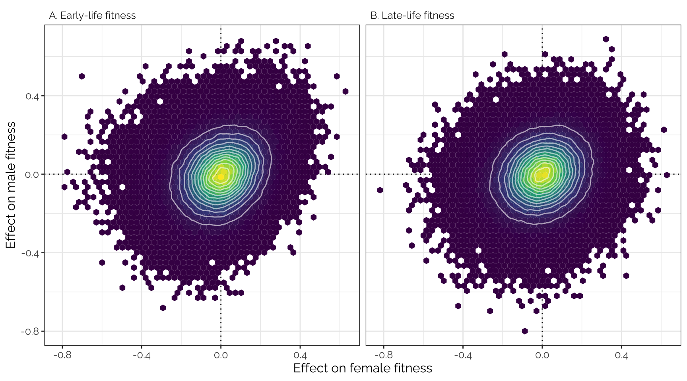

Plots and models of variant effect sizes
Last updated: 2021-10-01
Checks: 7 0
Knit directory: fitnessGWAS/
This reproducible R Markdown analysis was created with workflowr (version 1.6.2). The Checks tab describes the reproducibility checks that were applied when the results were created. The Past versions tab lists the development history.
Great! Since the R Markdown file has been committed to the Git repository, you know the exact version of the code that produced these results.
Great job! The global environment was empty. Objects defined in the global environment can affect the analysis in your R Markdown file in unknown ways. For reproduciblity it’s best to always run the code in an empty environment.
The command set.seed(20180914) was run prior to running the code in the R Markdown file. Setting a seed ensures that any results that rely on randomness, e.g. subsampling or permutations, are reproducible.
Great job! Recording the operating system, R version, and package versions is critical for reproducibility.
Nice! There were no cached chunks for this analysis, so you can be confident that you successfully produced the results during this run.
Great job! Using relative paths to the files within your workflowr project makes it easier to run your code on other machines.
Great! You are using Git for version control. Tracking code development and connecting the code version to the results is critical for reproducibility.
The results in this page were generated with repository version 01226ab. See the Past versions tab to see a history of the changes made to the R Markdown and HTML files.
Note that you need to be careful to ensure that all relevant files for the analysis have been committed to Git prior to generating the results (you can use wflow_publish or wflow_git_commit). workflowr only checks the R Markdown file, but you know if there are other scripts or data files that it depends on. Below is the status of the Git repository when the results were generated:
Ignored files:
Ignored: .DS_Store
Ignored: .Rapp.history
Ignored: .Rhistory
Ignored: .Rproj.user/
Ignored: .httr-oauth
Ignored: .pversion
Ignored: analysis/.DS_Store
Ignored: analysis/correlations_SNP_effects_cache/
Ignored: code/.DS_Store
Ignored: code/Drosophila_GWAS.Rmd
Ignored: data/.DS_Store
Ignored: data/derived/
Ignored: data/input/.DS_Store
Ignored: data/input/.pversion
Ignored: data/input/dgrp.fb557.annot.txt
Ignored: data/input/dgrp2.bed
Ignored: data/input/dgrp2.bim
Ignored: data/input/dgrp2.fam
Ignored: data/input/huang_transcriptome/
Ignored: figures/.DS_Store
Ignored: figures/fig1_inkscape.svg
Ignored: figures/figure1a.pdf
Ignored: figures/figure1b.pdf
Untracked files:
Untracked: big_model.rds
Untracked: code/quant_gen_1.R
Untracked: data/input/genomic_relatedness_matrix.rds
Untracked: old_analyses/
Unstaged changes:
Modified: .gitignore
Modified: figures/GWAS_stats_figure.pdf
Modified: figures/SNP_effect_ED.pdf
Modified: figures/TWAS_stats_figure.pdf
Modified: figures/antagonism_ratios.pdf
Modified: figures/boyle_plot.pdf
Modified: figures/composite_mixture_figure.pdf
Modified: figures/eff_size_histos.pdf
Note that any generated files, e.g. HTML, png, CSS, etc., are not included in this status report because it is ok for generated content to have uncommitted changes.
These are the previous versions of the repository in which changes were made to the R Markdown (analysis/plot_models_variant_effects.Rmd) and HTML (docs/plot_models_variant_effects.html) files. If you’ve configured a remote Git repository (see ?wflow_git_remote), click on the hyperlinks in the table below to view the files as they were in that past version.
| File | Version | Author | Date | Message |
|---|---|---|---|---|
| html | 4953d58 | lukeholman | 2021-09-26 | Build site. |
| Rmd | 2bf8750 | lukeholman | 2021-09-26 | Commit Sept 2021 |
| html | 8d14298 | lukeholman | 2021-09-26 | Build site. |
| Rmd | af15dd6 | lukeholman | 2021-09-26 | Commit Sept 2021 |
| html | 871ae81 | lukeholman | 2021-03-04 | Build site. |
| html | e112260 | lukeholman | 2021-03-04 | Build site. |
| Rmd | c606d3d | lukeholman | 2021-03-04 | big first commit 2021 |
library(tidyverse)
library(gridExtra)
library(qqman)
library(ggbeeswarm)
library(Hmisc)
library(showtext) # For fancy Google font in figures
library(mashr)
library(kableExtra)
library(cowplot)
library(grid)
font_add_google(name = "Raleway", family = "Raleway", regular.wt = 400, bold.wt = 700) # Install font from Google Fonts
showtext_auto()
db <- DBI::dbConnect(RSQLite::SQLite(),
"data/derived/annotations.sqlite3")
# Results for all 1,613,615 SNPs, even those that are in 100% LD with others (these are grouped up by the SNP_clump column)
all_snps <- tbl(db, "univariate_lmm_results")
# All SNPs and SNP groups that are in <100% LD with one another (n = 1,207,357)
SNP_clumps <- all_snps %>% select(-SNP) %>% distinct() %>% collect(n = Inf)
# Subsetting variable to get the approx-LD subset of SNPs
LD_subset <- !is.na(SNP_clumps$LFSR_female_early_mashr_ED)Load and clean the variant effect sizes
Modify column names, reorder columns, filter based on the p-value, etc.
# Univariate analysis, mashr-adjusted, data-driven approach
univariate_lmm_results <- tbl(db, "univariate_lmm_results") %>%
select(-contains("canonical"),
-contains("raw")) %>%
inner_join(tbl(db, "variants") %>%
select(SNP, FBID, site.class, distance.to.gene, MAF),
by = "SNP") %>%
left_join(
tbl(db, "genes") %>%
select(FBID, gene_name), by = "FBID") %>%
collect(n = Inf) %>%
rename_all(~ gsub("beta_", "", .x)) %>%
rename_all(~ gsub("_mashr_ED", "", .x))
univariate_lmm_results <- univariate_lmm_results %>%
mutate(site.class = gsub("5_", "5-", site.class),
site.class = gsub("3_", "3-", site.class),
site.class = gsub("NON_", "NON-", site.class),
site.class = gsub("_", " ", site.class),
site.class = capitalize(tolower(site.class)),
site.class = gsub("Utr", "UTR", site.class)
)
# Results of one multivariate linear mixed model run in GEMMA:
# multivariate_lmm_results <-
# read_tsv("data/derived/output/all_four_traits.assoc.txt") %>%
# filter(p_fdr < 0.05) %>%
# inner_join(tbl(db, "variants") %>%
# select(-chr, -position) %>%
# collect(), by = "SNP") %>%
# arrange(p_wald) %>%
# select(-contains("Vbeta")) %>%
# left_join(
# tbl(db, "genes") %>%
# select(FBID, gene_name) %>%
# collect(n=Inf), by = "FBID") %>%
# mutate(gene_name = replace(gene_name, is.na(FBID), NA))
#
# multivariate_lmm_results <- multivariate_lmm_results[,c(1:8, 14, 9:13)]
#
# multivariate_lmm_results <- multivariate_lmm_results %>%
# mutate_at(vars(starts_with("p_")), ~ -log10(.x)) %>%
# mutate_if(is.numeric, ~ format(round(.x, 2), nsmall = 2)) %>%
# left_join(tbl(db, "univariate_lmm_results") %>%
# select(SNP, SNP_clump) %>%
# collect(),
# by = "SNP") %>%
# distinct(SNP_clump, .keep_all = TRUE) %>%
# select(SNP, SNP_clump, everything())Q-Q plots
Here are some quantile-quantile plots, which are commonly used to check GWAS results, and to test the hypothesis that there are more SNPs than expected showing large effects on the trait of interest. There is an excess of loci with effects on female fitness, but not much of a visible excess for males.
Female early-life fitness
# univariate_lmm_pvals <- tbl(db, "univariate_lmm_results") %>%
# select(contains("LFSR")) %>% select(contains("ED")) %>% collect(n=Inf) %>% as.data.frame()
# qqman::qq(univariate_lmm_results$LFSR_female_early_mashr_ED)
univariate_lmm_pvals <- SNP_clumps %>%
select(contains("pvalue")) %>% filter(LD_subset) %>% as.data.frame()
qqman::qq(univariate_lmm_pvals$pvalue_female_early_raw)
| Version | Author | Date |
|---|---|---|
| 8d14298 | lukeholman | 2021-09-26 |
Female late-life fitness
#qqman::qq(univariate_lmm_results$LFSR_female_late_mashr_ED)
qqman::qq(univariate_lmm_pvals$pvalue_female_late_raw)
| Version | Author | Date |
|---|---|---|
| 8d14298 | lukeholman | 2021-09-26 |
Male early-life fitness
# qqman::qq(univariate_lmm_results$LFSR_male_early_mashr_ED)
qqman::qq(univariate_lmm_pvals$pvalue_male_early_raw)
| Version | Author | Date |
|---|---|---|
| 8d14298 | lukeholman | 2021-09-26 |
Male late-life fitness
# qqman::qq(univariate_lmm_results$LFSR_male_late_mashr_ED)
qqman::qq(univariate_lmm_pvals$pvalue_male_late_raw)
| Version | Author | Date |
|---|---|---|
| 8d14298 | lukeholman | 2021-09-26 |
Hex bin plots and correlations in variant effect sizes
Effect sizes adjusted using ‘data-driven’ adaptive shrinkage
Plot
hex_plot <- function(x, y, xlab, ylab, title,
xlim = c(-0.5, 0.5),
ylim = c(-0.3, 0.3)
){
dat <- SNP_clumps %>%
mutate(facet = title) %>%
filter(LD_subset) # ensure only the LD SNPs from mashr are plotted
ggplot(dat, aes_string(x, y)) +
geom_abline(linetype = 2) +
geom_vline(xintercept = 0, linetype = 3) +
geom_hline(yintercept = 0, linetype = 3) +
stat_binhex(bins = 50) +
geom_density_2d(colour = "white", alpha = 0.6) +
scale_fill_viridis_c() +
coord_cartesian(xlim = xlim, ylim = ylim) +
facet_wrap(~ facet) +
theme_bw() + xlab(xlab) + ylab(ylab) +
theme(legend.position = "none",
strip.background = element_blank(),
strip.text = element_text(hjust=0)) +
theme(text = element_text(family = "Raleway", size = 12))
}
p1 <- hex_plot("beta_female_early_mashr_ED",
"beta_male_early_mashr_ED",
"Effect on female fitness",
NULL,
"A. Early life fitness")
p2 <- hex_plot("beta_female_late_mashr_ED",
"beta_male_late_mashr_ED",
"Effect on female fitness",
NULL,
"B. Late life fitness")
grid.arrange(p1, p2, ncol = 2, left = "Effect on male fitness")
Figure 2: Effect sizes of 1207357 loci (i.e. groups of one or more polymorphic sites in complete linkage disequilibrium) on male and female fitness, plotted separately for the early-life and late-life estimates. The effect sizes estimated using GEMMA have been corrected using mashr, using the data-driven method to apply shrinkage (Figure SX shows the raw estimates). The data have been binned into hexagons, with the colour and contour lines indicating the number of loci. The diagonal line represents \(y=x\). Positive effect sizes indicate that the minor allele is associated with higher fitness.
Pearson correlation
SNP_clumps %>%
select(contains("mashr_ED")) %>%
select(contains("beta")) %>%
rename_all(~ paste(ifelse(str_detect(.x, "female"), "Female", "Male"),
ifelse(str_detect(.x, "early"), "early", "late"))) %>%
cor(use = "pairwise.complete.obs") %>%
kable(digits = 3) %>% kable_styling(full_width = FALSE)| Female early | Female late | Male early | Male late | |
|---|---|---|---|---|
| Female early | 1.000 | 0.998 | 0.911 | 0.950 |
| Female late | 0.998 | 1.000 | 0.880 | 0.927 |
| Male early | 0.911 | 0.880 | 1.000 | 0.994 |
| Male late | 0.950 | 0.927 | 0.994 | 1.000 |
Effect sizes adjusted using ‘canonical’ adaptive shrinkage
Plot
The unusual distribution here reflects the fact that this analysis imposed constraints on the effects of each locus. For example, loci assigned to the ‘Female-specific’ category with high probability necessarily have an effect size close to zero in males. The figure should be interpreted cautiously - the main purpose of the canonical analysis is to inference the mixture proportions, and to assign mixture probabilities to each locus, not to accurately estimate the true effect size of each variant.
p1 <- hex_plot("beta_female_early_mashr_canonical",
"beta_male_early_mashr_canonical",
"Effect on female fitness",
NULL,
"A. Early life fitness")
p2 <- hex_plot("beta_female_late_mashr_canonical",
"beta_male_late_mashr_canonical",
"Effect on female fitness",
NULL,
"B. Late life fitness")
grid.arrange(p1, p2, ncol = 2, left = "Effect on male fitness")
Pearson correlation
SNP_clumps %>%
select(contains("mashr_canonical")) %>%
select(contains("beta")) %>%
rename_all(~ paste(ifelse(str_detect(.x, "female"), "Female", "Male"),
ifelse(str_detect(.x, "early"), "early", "late"))) %>%
cor(use = "pairwise.complete.obs") %>%
kable(digits = 3) %>% kable_styling(full_width = FALSE)| Female early | Female late | Male early | Male late | |
|---|---|---|---|---|
| Female early | 1.000 | 1.000 | 0.855 | 0.855 |
| Female late | 1.000 | 1.000 | 0.855 | 0.855 |
| Male early | 0.855 | 0.855 | 1.000 | 1.000 |
| Male late | 0.855 | 0.855 | 1.000 | 1.000 |
Unadjusted effect sizes
Plot
Uses the variant effect sizes output by GEMMA, without applying any shrinkage (i.e. this is the data that was adjusted using mashr).
p1 <- hex_plot("beta_female_early_raw",
"beta_male_early_raw",
"Effect on female fitness",
NULL,
"A. Early life fitness",
xlim = c(-1, 1),
ylim = c(-1, 1))
p2 <- hex_plot("beta_female_late_raw",
"beta_male_late_raw",
"Effect on female fitness",
NULL,
"B. Late life fitness",
xlim = c(-1, 1),
ylim = c(-1, 1))
grid.arrange(p1, p2, ncol = 2, left = "Effect on male fitness")
Pearson correlation
SNP_clumps %>%
select(contains("raw")) %>%
select(contains("beta")) %>%
rename_all(~ paste(ifelse(str_detect(.x, "female"), "Female", "Male"),
ifelse(str_detect(.x, "early"), "early", "late"))) %>%
cor(use = "pairwise.complete.obs") %>%
kable(digits = 3) %>% kable_styling(full_width = FALSE)| Female early | Female late | Male early | Male late | |
|---|---|---|---|---|
| Female early | 1.000 | 0.567 | 0.220 | 0.118 |
| Female late | 0.567 | 1.000 | 0.215 | 0.167 |
| Male early | 0.220 | 0.215 | 1.000 | 0.434 |
| Male late | 0.118 | 0.167 | 0.434 | 1.000 |
Average effect sizes are negative
Each of the following four tests is an intercept-only linear model, weighted by the inverse of the standard error for the focal variant’s effect size (so, loci where the effect effect size was measured with more precision are weighted more heavily). The tests are run on the LD-pruned subset of SNPs, minimising pseudoreplication. A non-zero intercept term indicates that major (or minor) alleles tend to have consistently positive or negative associations with the focal fitness trait.
These results indicate that the minor allele tends to reduce fitness, relative to the major allele. It’s a weak effect (note the small value in the Estimate column), this may reflect the large uncertainty with which the effect sizes are measured, in addition to a true biological result that most loci have little or no relationship with the fitness traits we measured.
Female early-life
summary(lm(beta_female_early_raw ~ 1,
data = SNP_clumps %>% filter(LD_subset),
weights = 1 / SE_female_early_raw))
Call:
lm(formula = beta_female_early_raw ~ 1, data = SNP_clumps %>%
filter(LD_subset), weights = 1/SE_female_early_raw)
Weighted Residuals:
Min 1Q Median 3Q Max
-1.98458 -0.22630 0.00919 0.23696 1.48781
Coefficients:
Estimate Std. Error t value Pr(>|t|)
(Intercept) -0.0016820 0.0002555 -6.584 4.58e-11 ***
---
Signif. codes: 0 '***' 0.001 '**' 0.01 '*' 0.05 '.' 0.1 ' ' 1
Residual standard error: 0.3497 on 208986 degrees of freedomFemale late-life
summary(lm(beta_female_late_raw ~ 1,
data = SNP_clumps %>% filter(LD_subset),
weights = 1 / SE_female_late_raw))
Call:
lm(formula = beta_female_late_raw ~ 1, data = SNP_clumps %>%
filter(LD_subset), weights = 1/SE_female_late_raw)
Weighted Residuals:
Min 1Q Median 3Q Max
-1.94128 -0.23405 0.00409 0.23909 1.47335
Coefficients:
Estimate Std. Error t value Pr(>|t|)
(Intercept) -0.0025016 0.0002598 -9.63 <2e-16 ***
---
Signif. codes: 0 '***' 0.001 '**' 0.01 '*' 0.05 '.' 0.1 ' ' 1
Residual standard error: 0.3549 on 208986 degrees of freedomMale early-life
summary(lm(beta_male_early_raw ~ 1,
data = SNP_clumps %>% filter(LD_subset),
weights = 1 / SE_male_early_raw))
Call:
lm(formula = beta_male_early_raw ~ 1, data = SNP_clumps %>% filter(LD_subset),
weights = 1/SE_male_early_raw)
Weighted Residuals:
Min 1Q Median 3Q Max
-1.58868 -0.23295 -0.00219 0.23114 1.76956
Coefficients:
Estimate Std. Error t value Pr(>|t|)
(Intercept) -0.0016140 0.0002542 -6.35 2.15e-10 ***
---
Signif. codes: 0 '***' 0.001 '**' 0.01 '*' 0.05 '.' 0.1 ' ' 1
Residual standard error: 0.3503 on 208986 degrees of freedomMale late-life
summary(lm(beta_male_late_raw ~ 1,
data = SNP_clumps %>% filter(LD_subset),
weights = 1 / SE_male_late_raw))
Call:
lm(formula = beta_male_late_raw ~ 1, data = SNP_clumps %>% filter(LD_subset),
weights = 1/SE_male_late_raw)
Weighted Residuals:
Min 1Q Median 3Q Max
-1.89125 -0.22874 0.00114 0.23182 1.59205
Coefficients:
Estimate Std. Error t value Pr(>|t|)
(Intercept) -0.001943 0.000251 -7.739 1e-14 ***
---
Signif. codes: 0 '***' 0.001 '**' 0.01 '*' 0.05 '.' 0.1 ' ' 1
Residual standard error: 0.3479 on 208986 degrees of freedomTest boyle idea
Inspired by Boyle et al. (Cell), we sorted all of the variants by their fitness effects, placed them in bins of 1000, and then calculated the average fitness effect for each bin. Figure 4 shows that there was a very tight correlation between the average effects of the variants in each bin on male and female fitness. This is what would predict if variants that affect male fitness tend to also affect female fitness in the same direction, and if a very large number of loci have small (and concordant) effects on the fitness of both sexes.
p1 <- SNP_clumps %>%
filter(LD_subset) %>% # The figure looks the same whether or not the data are thinned to the LD set of SNPs
arrange(beta_female_early_raw) %>%
mutate(bin = c(rep(1:floor(n()/1000), each = 1000),
rep(floor(n()/1000) + 1, each = n() %% 1000)),
age = "A. Early life") %>%
group_by(bin, age) %>%
summarise(females = mean(beta_female_early_raw), males = mean(beta_male_early_raw)) %>%
ggplot(aes(females, males)) +
geom_hline(yintercept = 0, linetype = 2) +
geom_vline(xintercept = 0, linetype = 2) +
geom_point() +
stat_smooth(method = "lm", formula = y ~ x + I(x^2), size = 0.6) +
facet_wrap(~ age) +
scale_y_continuous(limits = c(-0.1, 0.27)) +
xlab(NULL) + ylab(NULL) +
theme_bw() +
theme(strip.background = element_blank(),
strip.text = element_text(hjust=0)) +
theme(text = element_text(family = "Raleway", size = 12))
p2 <- SNP_clumps %>%
filter(LD_subset) %>%
arrange(beta_female_late_raw) %>%
mutate(bin = c(rep(1:floor(n()/1000), each = 1000),
rep(floor(n()/1000) + 1, each = n() %% 1000)),
age = "B. Late life") %>%
group_by(bin, age) %>%
summarise(females = mean(beta_female_late_raw), males = mean(beta_male_late_raw)) %>%
ggplot(aes(females, males)) +
geom_hline(yintercept = 0, linetype = 2) +
geom_vline(xintercept = 0, linetype = 2) +
geom_point() +
stat_smooth(method = "lm", formula = y ~ x + I(x^2), size = 0.6) +
facet_wrap(~ age) +
scale_y_continuous(limits = c(-0.1, 0.27)) +
xlab(NULL) + ylab(NULL) +
theme_bw() +
theme(strip.background = element_blank(),
strip.text = element_text(hjust=0)) +
theme(text = element_text(family = "Raleway", size = 12))
grid.arrange(p1, p2, nrow = 1, bottom = "Mean effect size on female fitness",
left = "Mean effect size on male fitness")
| Version | Author | Date |
|---|---|---|
| 8d14298 | lukeholman | 2021-09-26 |
Plot the estimated mixture proportions from mashr
# Make plot for the GWAS
mashr_results_canonical <- read_rds("data/derived/mashr_results_canonical.rds")
mashr_2L <- readRDS("data/derived/mashr_results_canonical_chr2L.rds")
mashr_2R <- readRDS("data/derived/mashr_results_canonical_chr2R.rds")
mashr_3L <- readRDS("data/derived/mashr_results_canonical_chr3L.rds")
mashr_3R <- readRDS("data/derived/mashr_results_canonical_chr3R.rds")
mashr_X <- readRDS("data/derived/mashr_results_canonical_chrX.rds")
mix <- bind_rows(
enframe(sort(get_estimated_pi(mashr_results_canonical))) %>%
mutate(Chromosome = "All"),
enframe(sort(get_estimated_pi(mashr_2L))) %>%
mutate(Chromosome = "2L"),
enframe(sort(get_estimated_pi(mashr_2R))) %>%
mutate(Chromosome = "2R"),
enframe(sort(get_estimated_pi(mashr_3L))) %>%
mutate(Chromosome = "3L"),
enframe(sort(get_estimated_pi(mashr_3R))) %>%
mutate(Chromosome = "3R"),
enframe(sort(get_estimated_pi(mashr_X))) %>%
mutate(Chromosome = "X")) %>%
rename(Mixture_component = name)
to_keep <- mix %>%
group_by(Mixture_component) %>%
summarise(value = max(value), .groups = "drop") %>%
filter(value > 0.01) %>%
pull(Mixture_component)
mix <- mix %>%
filter(Mixture_component %in% to_keep) %>%
spread(Mixture_component, value) %>%
rename(`Sexually concordant effect` = equal_effects,
`Female-specific effect` = Female_specific_1,
`Male-specific effect` = Male_specific_1,
`Sexually antagonistic effect` = Sex_antag_0.25,
`No effect on fitness` = null) %>%
gather(Mixture_component, value, -Chromosome) %>%
arrange(-value)
chr_levels <- mix %>%
filter(Mixture_component == "Sexually antagonistic effect") %>%
arrange(value) %>% pull(Chromosome)
mix <- mix %>%
mutate(Chromosome = factor(Chromosome, chr_levels),
Mixture_component = factor(Mixture_component,
c("Sexually antagonistic effect",
"Sexually concordant effect",
"Female-specific effect",
"Male-specific effect",
"No effect on fitness")))
p1 <- mix %>%
ggplot(aes(Chromosome, 100 * value)) +
geom_bar(stat = "identity",aes(fill = Chromosome), colour = "grey10", size = 0.3) +
scale_fill_brewer(palette = "Spectral", direction = -1) +
coord_flip() +
theme_bw() +
scale_y_continuous(expand = c(0,0), limits = c(0, 70)) +
scale_x_discrete(expand = c(0.14, 0.14)) +
theme(axis.ticks.y = element_blank(),
legend.position = "none",
panel.border = element_rect(size = 0.8),
text = element_text(family = "Raleway", size = 12),
strip.background = element_blank(),
panel.grid.major.y = element_blank()) +
ylab("Estimated % of loci") +
facet_wrap(~ Mixture_component, ncol = 1)
# Make plot for the TWAS
mashr_results_canonical <- readRDS("data/derived/TWAS/TWAS_canonical.rds")
mashr_2L <- readRDS("data/derived/TWAS/TWAS_canonical_2L.rds")
mashr_2R <- readRDS("data/derived/TWAS/TWAS_canonical_2R.rds")
mashr_3L <- readRDS("data/derived/TWAS/TWAS_canonical_3L.rds")
mashr_3R <- readRDS("data/derived/TWAS/TWAS_canonical_3R.rds")
mashr_X <- readRDS("data/derived/TWAS/TWAS_canonical_X.rds")
mix <- bind_rows(
enframe(sort(get_estimated_pi(mashr_results_canonical))) %>%
mutate(Chromosome = "All"),
enframe(sort(get_estimated_pi(mashr_2L))) %>%
mutate(Chromosome = "2L"),
enframe(sort(get_estimated_pi(mashr_2R))) %>%
mutate(Chromosome = "2R"),
enframe(sort(get_estimated_pi(mashr_3L))) %>%
mutate(Chromosome = "3L"),
enframe(sort(get_estimated_pi(mashr_3R))) %>%
mutate(Chromosome = "3R"),
enframe(sort(get_estimated_pi(mashr_X))) %>%
mutate(Chromosome = "X")) %>%
rename(Mixture_component = name) %>%
mutate(Mixture_component = str_remove_all(Mixture_component, "_0.25"),
Mixture_component = str_remove_all(Mixture_component, "_0.5"),
Mixture_component = str_remove_all(Mixture_component, "_0.75"),
Mixture_component = str_remove_all(Mixture_component, "_1.0")) %>%
group_by(Mixture_component, Chromosome) %>%
summarise(value = sum(value), .groups = "drop")
to_keep <- mix %>%
group_by(Mixture_component) %>%
summarise(value = max(value), .groups = "drop") %>%
filter(value > 0.01) %>%
pull(Mixture_component)
mix <- mix %>%
filter(Mixture_component %in% to_keep) %>%
spread(Mixture_component, value) %>%
rename(`Sexually concordant effect` = equal_effects,
`Female-specific effect` = Female_specific_1,
`Male-specific effect` = Male_specific_1,
`Sexually antagonistic effect` = Sex_antag,
`No effect on fitness` = null) %>%
gather(Mixture_component, value, -Chromosome) %>%
arrange(-value)
chr_levels <- rev(c("X", "3L", "3R", "All", "2R", "2L"))
mix <- mix %>%
mutate(Chromosome = factor(Chromosome, chr_levels),
Mixture_component = factor(Mixture_component,
c("Sexually antagonistic effect",
"Sexually concordant effect",
"Female-specific effect",
"Male-specific effect",
"No effect on fitness")))
p2 <- mix %>%
ggplot(aes(Chromosome, 100 * value)) +
geom_bar(stat = "identity",aes(fill = Chromosome), colour = "grey10", size = 0.3) +
scale_fill_brewer(palette = "Spectral", direction = -1) +
coord_flip() +
theme_bw() +
scale_y_continuous(expand = c(0,0), limits = c(0, 65)) + #
scale_x_discrete(expand = c(0.14, 0.14)) +
theme(axis.ticks.y = element_blank(),
legend.position = "none",
panel.border = element_rect(size = 0.8),
text = element_text(family = "Raleway", size = 12),
strip.background = element_blank(),
panel.grid.major.y = element_blank()) +
ylab("Estimated % of transcripts") +
xlab(" ") +
facet_wrap(~ Mixture_component, ncol = 1)
# Save composite figure of the GWAS and TWAS mixture proportions
ggsave(filename = "figures/composite_mixture_figure.pdf",
cowplot::plot_grid(p1, p2, labels = c('A', 'B'), label_size = 12),
width = 5, height = 8)
cowplot::plot_grid(p1, p2, labels = c('A', 'B'), label_size = 12)
Figure X: Proportions of each type of locus, as estimated using the mixture model computed by mashr in the analysis using canonical covariance matrices. This analysis involved a number of pre-specified covariance matrices, each corresponding to a type of locus that we hypothesised to exist (shown in panel headings). The analysis fit some other matrix types not shown here, because the corresponding locus type was inferred to be rare/absent (these included neutral loci, estimated to comprise 0.5-1% of those tested, and age-antagonistic loci, none of which were detected). The analysis was run either using all 1,207,357 loci for which data were available (labeled ‘All’) or for all loci on each of the chromosomes (chromosomes 4 and Y had insufficient data). Notably, sexually-antagonistic loci were inferred to be especially common on the X chromosome, loci that affected males only were inferred to be rarer than those affecting females only, and chromosome 2R had many more female-specific than male-specific loci.
Statistical models: effects of site class, MAF and chromosome
The following models test whether site class, MAF (minor allele frequency) and chromosome predict how each locus affected our four phenotypes.
These analyses use the mixture assignment probabilities calculated by mashr (in the “canonical” analysis). For every locus, the mashr analysis calculated the probability that each locus was A) sexually antagonistic (meaning it had opposite effects on male and female fitness that were consistent across the two age categories), B) female-specific (meaning it affect female fitness but not male), C) male-specific (affecting male fitness only), and D) had equal effects on all four phenotypes (mean the allele that associated with higher fitness in males also was associated with higher fitness in females). Other types of loci were also considered in the model (e.g. null effect loci and ones with age-specific effects), but these were found to be quite rare, precluding analysis here.
Here, we use these mixture assignment probabilities as the response variable, in order to ask whether e.g. sexually antagonistic loci tend to appear in any particular type of site or chromosome, and whether they had a higher or lower MAF than average. Since these probabilities are bounded between zero and one, we use beta regression (a form of GLM designed to model variables in the range [0,1]). We fit a full model with site class, MAF and chromosome as predictor variables, as well as all the simpler nested models, and compare them using AICc model selection. We also present the results of the full model, and plot the parameter estimates from each of the four models below.
The dataset used in this model is
Tables of statistical results (models of GWAS effects)
library(betareg)
library(MuMIn)
library("lmtest")
LFSR_cutoff <- 0.05
dat <- univariate_lmm_results %>%
filter(LFSR_female_early < LFSR_cutoff | LFSR_female_late < LFSR_cutoff |
LFSR_male_early < LFSR_cutoff | LFSR_male_late < LFSR_cutoff) %>%
mutate(chr = gsub("_", "", substr(SNP, 1, 2))) %>%
select(SNP, SNP_clump, starts_with("P_"), MAF, site.class, chr) %>%
distinct()
# Focus only on the commonest site classes:
dat <- dat %>%
filter(site.class %in% c("Intron", "Intergenic", "Downstream", "Upstream",
"Synonymous coding", "Non-synonymous coding", "UTR 3-prime",
"Exon", "UTR 5-prime"))
# Remove chromosome 4 (too few sites)
dat <- dat %>% filter(chr != "4")
# If there are multiple site classes for a SNP, or multiple SNPs
# in the same 100% LD clump, pick one SNP and/or 1 site class at random
set.seed(1)
dat <- dat[sample(nrow(dat),nrow(dat)), ] %>%
split(.$SNP_clump) %>%
map_df(~ .x[1, ])
dat <- dat %>% arrange(site.class)
dat$site.class <- relevel(factor(dat$site.class), ref = "Synonymous coding")
n_loci <- prettyNum(nrow(dat), big.mark = ",", scientific = FALSE)
compare_mods <- function(MAF_and_Chromosome_and_site_class){
MAF_and_Chromosome <- update(MAF_and_Chromosome_and_site_class, ~ . -site.class)
MAF_and_siteclass <- update(MAF_and_Chromosome_and_site_class, ~ . -chr)
Chromosome_and_siteclass <- update(MAF_and_Chromosome_and_site_class, ~ . -chr)
MAF <- update(MAF_and_Chromosome_and_site_class, ~ . -site.class - chr)
Chromosome <- update(MAF_and_Chromosome_and_site_class, ~ . -site.class - MAF)
siteclass <- update(MAF_and_Chromosome_and_site_class, ~ . - MAF -chr)
Null_model <- update(MAF_and_Chromosome_and_site_class, ~ . -site.class - MAF -chr)
AICc(MAF_and_Chromosome_and_site_class,
MAF_and_Chromosome,
MAF_and_siteclass,
Chromosome_and_siteclass,
MAF, Chromosome, siteclass,
Null_model) %>%
rownames_to_column("Model") %>%
arrange(AICc) %>%
mutate(delta = AICc - AICc[1],
Model = str_replace_all(Model, "_and+_", " + "),
Weight = round(exp(-0.5 * delta) / sum(exp(-0.5 * delta)), 3),
delta = round(delta, 2)) %>%
kable(digits = 2) %>% kable_styling(full_width = FALSE)
}In each of the following analyses, the response variable is the mixture assignment probability to type \(i\) for each of the 11,475 loci that affected at least one of the phenotypes significantly (defined as LFSR < 0.05), where \(i\) is one of the four variant types shown in the above figure. In cases where multiple SNP or indel loci were in 100% linkage with one another, we picked a single locus at random and discarded the others.
Three predictors were available for each locus: the minor allele frequency (MAF) in the overall DGRP, the site class of the variant, and chromosome. Loci that were annotated with more than one site class (e.g. intron as well as exon, due to an overlap of genes) were assigned one of these site classes at random.
To evaluate the effects of three predictors on the response variable, we fit 8 nested models and compared them using AICc. We also present the summary() output for the top-ranked model according to AICc.
Probability of sexual antagonism
AICc table
betareg(P_sex_antag ~ MAF + chr + site.class,
data = dat) %>% compare_mods()| Model | df | AICc | delta | Weight |
|---|---|---|---|---|
| MAF + Chromosome | 7 | -42350.03 | 0.00 | 1 |
| MAF | 3 | -42338.90 | 11.13 | 0 |
| MAF + Chromosome + site_class | 15 | -42336.98 | 13.05 | 0 |
| MAF + siteclass | 11 | -42326.30 | 23.73 | 0 |
| Chromosome + siteclass | 11 | -42326.30 | 23.73 | 0 |
| Chromosome | 6 | -42034.26 | 315.77 | 0 |
| Null_model | 2 | -42023.09 | 326.94 | 0 |
| siteclass | 10 | -42011.10 | 338.92 | 0 |
Full model
p1 <- summary(betareg(P_sex_antag ~ MAF + chr + site.class, data = dat), type = "deviance")
p1
Call:
betareg(formula = P_sex_antag ~ MAF + chr + site.class, data = dat)
Deviance residuals:
Min 1Q Median 3Q Max
-3.9735 -0.3399 -0.2389 0.4247 7.3555
Coefficients (mean model with logit link):
Estimate Std. Error z value Pr(>|z|)
(Intercept) -2.844e+00 2.707e-02 -105.062 < 2e-16 ***
MAF 7.738e-01 4.413e-02 17.536 < 2e-16 ***
chr2R -2.767e-02 1.706e-02 -1.622 0.10482
chr3L 1.040e-02 1.653e-02 0.629 0.52931
chr3R 4.901e-02 1.743e-02 2.812 0.00492 **
chrX 2.284e-02 1.816e-02 1.258 0.20843
site.classDownstream -4.649e-03 2.766e-02 -0.168 0.86651
site.classExon -1.381e-03 5.883e-02 -0.023 0.98127
site.classIntergenic 1.544e-02 2.323e-02 0.664 0.50638
site.classIntron 5.904e-05 2.118e-02 0.003 0.99778
site.classNon-synonymous coding -1.724e-02 4.448e-02 -0.388 0.69836
site.classUpstream 1.938e-03 2.911e-02 0.067 0.94691
site.classUTR 3-prime 1.483e-02 4.439e-02 0.334 0.73826
site.classUTR 5-prime -6.213e-02 6.034e-02 -1.030 0.30319
Phi coefficients (precision model with identity link):
Estimate Std. Error z value Pr(>|z|)
(phi) 34.025 0.459 74.12 <2e-16 ***
---
Signif. codes: 0 '***' 0.001 '**' 0.01 '*' 0.05 '.' 0.1 ' ' 1
Type of estimator: ML (maximum likelihood)
Log-likelihood: 2.118e+04 on 15 Df
Pseudo R-squared: 0.03202
Number of iterations: 24 (BFGS) + 2 (Fisher scoring) Probability of being female-specific
AICc table
betareg(P_female_specific ~ MAF + chr + site.class,
data = dat) %>% compare_mods()| Model | df | AICc | delta | Weight |
|---|---|---|---|---|
| Chromosome | 6 | -27490.01 | 0.00 | 0.71 |
| MAF + Chromosome | 7 | -27488.09 | 1.92 | 0.27 |
| MAF + Chromosome + site_class | 15 | -27482.64 | 7.37 | 0.02 |
| Null_model | 2 | -27469.40 | 20.61 | 0.00 |
| MAF | 3 | -27467.44 | 22.57 | 0.00 |
| siteclass | 10 | -27463.48 | 26.53 | 0.00 |
| MAF + siteclass | 11 | -27461.51 | 28.50 | 0.00 |
| Chromosome + siteclass | 11 | -27461.51 | 28.50 | 0.00 |
Full model
p2 <- summary(betareg(P_female_specific ~ MAF + chr + site.class, data = dat), type = "deviance")
p2
Call:
betareg(formula = P_female_specific ~ MAF + chr + site.class, data = dat)
Deviance residuals:
Min 1Q Median 3Q Max
-1.6434 -0.7521 -0.6668 -0.2227 6.8125
Coefficients (mean model with logit link):
Estimate Std. Error z value Pr(>|z|)
(Intercept) -2.116722 0.039510 -53.575 < 2e-16 ***
MAF -0.017111 0.063606 -0.269 0.78792
chr2R 0.128853 0.024763 5.203 1.96e-07 ***
chr3L 0.041026 0.024355 1.684 0.09209 .
chr3R 0.073953 0.025778 2.869 0.00412 **
chrX 0.075132 0.026673 2.817 0.00485 **
site.classDownstream -0.015492 0.040613 -0.381 0.70287
site.classExon -0.034502 0.086555 -0.399 0.69018
site.classIntergenic 0.021466 0.034162 0.628 0.52976
site.classIntron -0.020124 0.031169 -0.646 0.51851
site.classNon-synonymous coding -0.004216 0.064645 -0.065 0.94800
site.classUpstream -0.011601 0.042774 -0.271 0.78623
site.classUTR 3-prime 0.115638 0.064138 1.803 0.07140 .
site.classUTR 5-prime -0.129561 0.088245 -1.468 0.14205
Phi coefficients (precision model with identity link):
Estimate Std. Error z value Pr(>|z|)
(phi) 7.4541 0.1042 71.54 <2e-16 ***
---
Signif. codes: 0 '***' 0.001 '**' 0.01 '*' 0.05 '.' 0.1 ' ' 1
Type of estimator: ML (maximum likelihood)
Log-likelihood: 1.376e+04 on 15 Df
Pseudo R-squared: 0.005271
Number of iterations: 25 (BFGS) + 2 (Fisher scoring) Probability of being male-specific
AICc table
betareg(P_male_specific ~ MAF + chr + site.class,
data = dat) %>% compare_mods()| Model | df | AICc | delta | Weight |
|---|---|---|---|---|
| MAF + Chromosome | 7 | -51665.18 | 0.00 | 0.86 |
| Chromosome | 6 | -51661.58 | 3.60 | 0.14 |
| MAF + Chromosome + site_class | 15 | -51651.42 | 13.76 | 0.00 |
| MAF | 3 | -51640.45 | 24.73 | 0.00 |
| Null_model | 2 | -51637.32 | 27.86 | 0.00 |
| MAF + siteclass | 11 | -51626.08 | 39.10 | 0.00 |
| Chromosome + siteclass | 11 | -51626.08 | 39.10 | 0.00 |
| siteclass | 10 | -51623.04 | 42.14 | 0.00 |
Full model
p3 <- summary(betareg(P_male_specific ~ MAF + chr + site.class, data = dat), type = "deviance")
p3
Call:
betareg(formula = P_male_specific ~ MAF + chr + site.class, data = dat)
Deviance residuals:
Min 1Q Median 3Q Max
-2.5524 -0.9656 -0.7707 0.3988 6.0893
Coefficients (mean model with logit link):
Estimate Std. Error z value Pr(>|z|)
(Intercept) -3.201306 0.038712 -82.695 < 2e-16 ***
MAF 0.145243 0.062118 2.338 0.0194 *
chr2R -0.121882 0.024354 -5.005 5.6e-07 ***
chr3L -0.009954 0.023508 -0.423 0.6720
chr3R 0.002648 0.024929 0.106 0.9154
chrX -0.032578 0.025907 -1.257 0.2086
site.classDownstream 0.004844 0.039552 0.122 0.9025
site.classExon 0.025183 0.083734 0.301 0.7636
site.classIntergenic -0.012609 0.033375 -0.378 0.7056
site.classIntron 0.009136 0.030390 0.301 0.7637
site.classNon-synonymous coding -0.014042 0.063202 -0.222 0.8242
site.classUpstream -0.003028 0.041727 -0.073 0.9422
site.classUTR 3-prime -0.052903 0.063983 -0.827 0.4083
site.classUTR 5-prime 0.024058 0.084393 0.285 0.7756
Phi coefficients (precision model with identity link):
Estimate Std. Error z value Pr(>|z|)
(phi) 18.5736 0.2807 66.18 <2e-16 ***
---
Signif. codes: 0 '***' 0.001 '**' 0.01 '*' 0.05 '.' 0.1 ' ' 1
Type of estimator: ML (maximum likelihood)
Log-likelihood: 2.584e+04 on 15 Df
Pseudo R-squared: 0.004862
Number of iterations: 25 (BFGS) + 2 (Fisher scoring) Probability of equal effects
AICc table
betareg(P_equal_effects ~ MAF + chr + site.class,
data = dat) %>% compare_mods()| Model | df | AICc | delta | Weight |
|---|---|---|---|---|
| MAF + Chromosome | 7 | -14326.50 | 0.00 | 0.76 |
| MAF + Chromosome + site_class | 15 | -14322.90 | 3.59 | 0.13 |
| MAF | 3 | -14322.01 | 4.49 | 0.08 |
| MAF + siteclass | 11 | -14318.59 | 7.91 | 0.01 |
| Chromosome + siteclass | 11 | -14318.59 | 7.91 | 0.01 |
| Chromosome | 6 | -14248.91 | 77.58 | 0.00 |
| Null_model | 2 | -14243.28 | 83.22 | 0.00 |
| siteclass | 10 | -14238.96 | 87.54 | 0.00 |
Full model
p4 <- summary(betareg(P_equal_effects ~ MAF + chr + site.class, data = dat), type = "deviance")
p4
Call:
betareg(formula = P_equal_effects ~ MAF + chr + site.class, data = dat)
Deviance residuals:
Min 1Q Median 3Q Max
-6.9330 -0.3277 0.2487 0.3315 2.5336
Coefficients (mean model with logit link):
Estimate Std. Error z value Pr(>|z|)
(Intercept) 1.457076 0.034863 41.794 < 2e-16 ***
MAF -0.503862 0.056604 -8.902 < 2e-16 ***
chr2R -0.041474 0.021996 -1.885 0.05937 .
chr3L -0.021499 0.021512 -0.999 0.31760
chr3R -0.074726 0.022726 -3.288 0.00101 **
chrX -0.048768 0.023589 -2.067 0.03870 *
site.classDownstream 0.002297 0.035983 0.064 0.94909
site.classExon 0.039400 0.076890 0.512 0.60835
site.classIntergenic -0.040796 0.030255 -1.348 0.17753
site.classIntron -0.005126 0.027611 -0.186 0.85272
site.classNon-synonymous coding 0.002345 0.057433 0.041 0.96742
site.classUpstream -0.012272 0.037863 -0.324 0.74586
site.classUTR 3-prime -0.113999 0.056976 -2.001 0.04541 *
site.classUTR 5-prime 0.130571 0.078503 1.663 0.09626 .
Phi coefficients (precision model with identity link):
Estimate Std. Error z value Pr(>|z|)
(phi) 7.13163 0.09138 78.05 <2e-16 ***
---
Signif. codes: 0 '***' 0.001 '**' 0.01 '*' 0.05 '.' 0.1 ' ' 1
Type of estimator: ML (maximum likelihood)
Log-likelihood: 7176 on 15 Df
Pseudo R-squared: 0.01076
Number of iterations: 24 (BFGS) + 2 (Fisher scoring) Tables of statistical results (models of TWAS effects)
twas <- readRDS("data/derived/TWAS/TWAS_mixture_assignment_probabilities.rds") %>%
left_join(tbl(db, "genes") %>% select(FBID, chromosome) %>% collect(), by = "FBID") %>%
left_join(read_csv("data/derived/gene_expression_by_sex.csv"), by = "FBID") %>%
filter(chromosome %in% c("2L", "2R", "3L", "3R", "X")) %>%
mutate(h2 = (female_narrow_heritability + male_narrow_heritability) / 2)
compare_mods <- function(Sex_bias_and_Chromosome_and_Expression_level_and_Heritability){
Chromosome_and_Expression_level_and_Heritability <- update(Sex_bias_and_Chromosome_and_Expression_level_and_Heritability,
~ . -male_bias_in_expression)
Sex_bias_and_Chromosome_and_Expression_level <- update(Sex_bias_and_Chromosome_and_Expression_level_and_Heritability,
~ . -h2)
Sex_bias_and_Expression_level_and_Heritability <- update(Sex_bias_and_Chromosome_and_Expression_level_and_Heritability,
~ . -chromosome)
Sex_bias_and_Chromosome_and_Heritability <- update(Sex_bias_and_Chromosome_and_Expression_level_and_Heritability,
~ . -AveExpr)
Chromosome_and_Expression_level <- update(Sex_bias_and_Chromosome_and_Expression_level_and_Heritability, ~ . -male_bias_in_expression -h2)
Sex_bias_and_Expression_level <- update(Sex_bias_and_Chromosome_and_Expression_level_and_Heritability, ~ . -chromosome -h2)
Sex_bias_and_Chromosome <- update(Sex_bias_and_Chromosome_and_Expression_level_and_Heritability, ~ . -AveExpr -h2)
Heritability_and_Expression_level <- update(Sex_bias_and_Chromosome_and_Expression_level_and_Heritability,
~ . -male_bias_in_expression -chromosome)
Heritability_and_Sex_bias <- update(Sex_bias_and_Chromosome_and_Expression_level_and_Heritability,
~ . -chromosome -AveExpr)
Heritability_and_Chromosome <- update(Sex_bias_and_Chromosome_and_Expression_level_and_Heritability,
~ . -male_bias_in_expression -AveExpr)
Chromosome <- update(Chromosome_and_Expression_level, ~ . -AveExpr)
Sex_bias <- update(Sex_bias_and_Expression_level, ~ . -AveExpr)
Expression_level <- update(Sex_bias_and_Expression_level, ~ . - male_bias_in_expression)
Heritability <- update(Heritability_and_Sex_bias, ~ . - male_bias_in_expression)
Null_model <- update(Chromosome, ~ . -chromosome)
AICc(
Sex_bias_and_Chromosome_and_Expression_level_and_Heritability,
Chromosome_and_Expression_level_and_Heritability,
Sex_bias_and_Chromosome_and_Expression_level,
Sex_bias_and_Expression_level_and_Heritability,
Sex_bias_and_Chromosome_and_Heritability,
Chromosome_and_Expression_level,
Sex_bias_and_Expression_level,
Sex_bias_and_Chromosome,
Heritability_and_Expression_level,
Heritability_and_Sex_bias,
Heritability_and_Chromosome,
Chromosome, Sex_bias, Expression_level, Heritability,
Null_model) %>%
rownames_to_column("Model") %>%
arrange(AICc) %>%
mutate(delta = AICc - AICc[1],
Model = str_replace_all(Model, "_and+_", " + "),
Weight = round(exp(-0.5 * delta) / sum(exp(-0.5 * delta)), 3),
delta = round(delta, 2))
}Probability of sexual antagonism
AICc table
betareg(P_sex_antag ~ male_bias_in_expression + chromosome + AveExpr + h2,
data = twas) %>% compare_mods() Model df AICc delta
1 Sex_bias + Expression_level 4 -34589.62 0.00
2 Sex_bias + Chromosome + Expression_level 8 -34588.66 0.96
3 Sex_bias + Expression_level + Heritability 5 -34587.64 1.98
4 Sex_bias + Chromosome + Expression_level + Heritability 9 -34586.68 2.94
5 Expression_level 3 -34577.47 12.16
6 Chromosome + Expression_level 7 -34576.37 13.25
7 Heritability + Expression_level 4 -34575.65 13.97
8 Chromosome + Expression_level + Heritability 8 -34574.53 15.09
9 Heritability + Sex_bias 4 -34554.36 35.26
10 Sex_bias + Chromosome + Heritability 8 -34553.42 36.21
11 Sex_bias 3 -34550.29 39.33
12 Sex_bias + Chromosome 7 -34549.20 40.42
13 Heritability 3 -34531.14 58.48
14 Heritability + Chromosome 7 -34530.40 59.23
15 Null_model 2 -34529.07 60.55
16 Chromosome 6 -34528.10 61.52
Weight
1 0.450
2 0.278
3 0.167
4 0.103
5 0.001
6 0.001
7 0.000
8 0.000
9 0.000
10 0.000
11 0.000
12 0.000
13 0.000
14 0.000
15 0.000
16 0.000Full model
q1 <- summary(betareg(P_sex_antag ~ male_bias_in_expression + AveExpr + chromosome + h2, data = twas), type = "deviance")
q1
Call:
betareg(formula = P_sex_antag ~ male_bias_in_expression + AveExpr + chromosome +
h2, data = twas)
Deviance residuals:
Min 1Q Median 3Q Max
-9.1747 -0.2995 0.0292 0.2848 10.3049
Coefficients (mean model with logit link):
Estimate Std. Error z value Pr(>|z|)
(Intercept) -0.0067608 0.0333946 -0.202 0.839564
male_bias_in_expression 0.0212796 0.0056547 3.763 0.000168 ***
AveExpr -0.0327572 0.0055128 -5.942 2.82e-09 ***
chromosome2R 0.0105978 0.0076951 1.377 0.168444
chromosome3L 0.0050394 0.0077886 0.647 0.517612
chromosome3R -0.0077820 0.0073929 -1.053 0.292508
chromosomeX 0.0009761 0.0083528 0.117 0.906975
h2 -0.0033264 0.0213525 -0.156 0.876203
Phi coefficients (precision model with identity link):
Estimate Std. Error z value Pr(>|z|)
(phi) 47.3331 0.5561 85.11 <2e-16 ***
---
Signif. codes: 0 '***' 0.001 '**' 0.01 '*' 0.05 '.' 0.1 ' ' 1
Type of estimator: ML (maximum likelihood)
Log-likelihood: 1.73e+04 on 9 Df
Pseudo R-squared: 0.004863
Number of iterations: 14 (BFGS) + 2 (Fisher scoring) Probability of being female-specific
AICc table
betareg(P_female_specific ~ male_bias_in_expression + chromosome + AveExpr + h2,
data = twas) %>% compare_mods() Model df AICc delta
1 Sex_bias + Chromosome + Expression_level + Heritability 9 -47773.64 0.00
2 Sex_bias + Expression_level + Heritability 5 -47763.96 9.68
3 Chromosome + Expression_level + Heritability 8 -47758.25 15.38
4 Heritability + Expression_level 4 -47750.58 23.06
5 Sex_bias + Chromosome + Heritability 8 -47727.93 45.70
6 Heritability + Chromosome 7 -47721.51 52.13
7 Heritability + Sex_bias 4 -47714.28 59.35
8 Heritability 3 -47709.71 63.92
9 Sex_bias + Chromosome + Expression_level 8 -47677.94 95.70
10 Chromosome + Expression_level 7 -47672.49 101.14
11 Sex_bias + Chromosome 7 -47667.51 106.12
12 Chromosome 6 -47664.52 109.11
13 Sex_bias + Expression_level 4 -47661.38 112.25
14 Expression_level 3 -47657.74 115.90
15 Sex_bias 3 -47649.57 124.07
16 Null_model 2 -47648.19 125.45
Weight
1 0.992
2 0.008
3 0.000
4 0.000
5 0.000
6 0.000
7 0.000
8 0.000
9 0.000
10 0.000
11 0.000
12 0.000
13 0.000
14 0.000
15 0.000
16 0.000Full model
q2 <- summary(betareg(P_female_specific ~ male_bias_in_expression + AveExpr + chromosome + h2, data = twas), type = "deviance")
q2
Call:
betareg(formula = P_female_specific ~ male_bias_in_expression + AveExpr +
chromosome + h2, data = twas)
Deviance residuals:
Min 1Q Median 3Q Max
-5.9987 -0.2762 -0.2203 0.3220 9.7146
Coefficients (mean model with logit link):
Estimate Std. Error z value Pr(>|z|)
(Intercept) -2.74270 0.06550 -41.871 < 2e-16 ***
male_bias_in_expression 0.04691 0.01105 4.246 2.17e-05 ***
AveExpr 0.07410 0.01079 6.866 6.62e-12 ***
chromosome2R 0.01296 0.01515 0.856 0.3921
chromosome3L 0.02633 0.01529 1.722 0.0851 .
chromosome3R 0.01513 0.01454 1.041 0.2981
chromosomeX 0.06422 0.01625 3.952 7.77e-05 ***
h2 -0.40654 0.04285 -9.487 < 2e-16 ***
Phi coefficients (precision model with identity link):
Estimate Std. Error z value Pr(>|z|)
(phi) 32.5062 0.3905 83.25 <2e-16 ***
---
Signif. codes: 0 '***' 0.001 '**' 0.01 '*' 0.05 '.' 0.1 ' ' 1
Type of estimator: ML (maximum likelihood)
Log-likelihood: 2.39e+04 on 9 Df
Pseudo R-squared: 0.008403
Number of iterations: 17 (BFGS) + 2 (Fisher scoring) Probability of being female-specific
AICc table
betareg(P_male_specific ~ male_bias_in_expression + chromosome + AveExpr + h2,
data = twas) %>% compare_mods() Model df AICc delta
1 Sex_bias + Expression_level + Heritability 5 -48541.57 0.00
2 Sex_bias + Chromosome + Expression_level + Heritability 9 -48536.30 5.27
3 Heritability + Expression_level 4 -48531.28 10.29
4 Chromosome + Expression_level + Heritability 8 -48525.64 15.93
5 Sex_bias + Expression_level 4 -48525.47 16.10
6 Sex_bias + Chromosome + Expression_level 8 -48520.08 21.49
7 Expression_level 3 -48509.93 31.64
8 Chromosome + Expression_level 7 -48504.39 37.18
9 Heritability + Sex_bias 4 -48501.00 40.57
10 Sex_bias 3 -48498.88 42.69
11 Sex_bias + Chromosome + Heritability 8 -48495.65 45.92
12 Sex_bias + Chromosome 7 -48493.54 48.03
13 Heritability 3 -48479.33 62.25
14 Null_model 2 -48475.30 66.28
15 Heritability + Chromosome 7 -48473.93 67.65
16 Chromosome 6 -48470.07 71.50
Weight
1 0.928
2 0.066
3 0.005
4 0.000
5 0.000
6 0.000
7 0.000
8 0.000
9 0.000
10 0.000
11 0.000
12 0.000
13 0.000
14 0.000
15 0.000
16 0.000Full model
q3 <- summary(betareg(P_male_specific ~ male_bias_in_expression + AveExpr + chromosome + h2, data = twas), type = "deviance")
q3
Call:
betareg(formula = P_male_specific ~ male_bias_in_expression + AveExpr +
chromosome + h2, data = twas)
Deviance residuals:
Min 1Q Median 3Q Max
-4.5503 -0.3445 -0.2935 0.2302 7.7542
Coefficients (mean model with logit link):
Estimate Std. Error z value Pr(>|z|)
(Intercept) -2.923866 0.073749 -39.646 < 2e-16 ***
male_bias_in_expression -0.043979 0.012576 -3.497 0.00047 ***
AveExpr 0.079554 0.012143 6.552 5.69e-11 ***
chromosome2R -0.020737 0.017004 -1.220 0.22264
chromosome3L -0.012236 0.017187 -0.712 0.47653
chromosome3R 0.002803 0.016277 0.172 0.86327
chromosomeX -0.009666 0.018381 -0.526 0.59900
h2 -0.195834 0.047498 -4.123 3.74e-05 ***
Phi coefficients (precision model with identity link):
Estimate Std. Error z value Pr(>|z|)
(phi) 27.3715 0.3325 82.33 <2e-16 ***
---
Signif. codes: 0 '***' 0.001 '**' 0.01 '*' 0.05 '.' 0.1 ' ' 1
Type of estimator: ML (maximum likelihood)
Log-likelihood: 2.428e+04 on 9 Df
Pseudo R-squared: 0.005682
Number of iterations: 16 (BFGS) + 2 (Fisher scoring) Probability of equal effects
AICc table
betareg(P_equal_effects ~ male_bias_in_expression + chromosome + AveExpr + chromosome + h2,
data = twas) %>% compare_mods() Model df AICc delta
1 Sex_bias + Chromosome + Expression_level + Heritability 9 -27223.43 0.00
2 Sex_bias + Expression_level + Heritability 5 -27218.69 4.74
3 Chromosome + Expression_level + Heritability 8 -27215.11 8.33
4 Heritability + Expression_level 4 -27209.96 13.48
5 Sex_bias + Chromosome + Expression_level 8 -27208.79 14.65
6 Sex_bias + Expression_level 4 -27202.92 20.51
7 Chromosome + Expression_level 7 -27196.06 27.38
8 Expression_level 3 -27189.30 34.13
9 Sex_bias + Chromosome 7 -27119.08 104.36
10 Sex_bias + Chromosome + Heritability 8 -27117.14 106.29
11 Sex_bias 3 -27112.39 111.04
12 Heritability + Sex_bias 4 -27110.55 112.89
13 Chromosome 6 -27093.17 130.27
14 Heritability + Chromosome 7 -27091.62 131.81
15 Null_model 2 -27084.72 138.71
16 Heritability 3 -27083.46 139.97
Weight
1 0.900
2 0.084
3 0.014
4 0.001
5 0.001
6 0.000
7 0.000
8 0.000
9 0.000
10 0.000
11 0.000
12 0.000
13 0.000
14 0.000
15 0.000
16 0.000Full model
q4 <- summary(betareg(P_equal_effects ~ male_bias_in_expression + AveExpr + chromosome + h2, data = twas), type = "deviance")
q4
Call:
betareg(formula = P_equal_effects ~ male_bias_in_expression + AveExpr +
chromosome + h2, data = twas)
Deviance residuals:
Min 1Q Median 3Q Max
-4.8118 -0.2348 -0.1783 0.3070 7.5082
Coefficients (mean model with logit link):
Estimate Std. Error z value Pr(>|z|)
(Intercept) -2.126579 0.069649 -30.533 < 2e-16 ***
male_bias_in_expression -0.038117 0.011843 -3.219 0.00129 **
AveExpr 0.119363 0.011467 10.409 < 2e-16 ***
chromosome2R -0.023619 0.016095 -1.468 0.14223
chromosome3L -0.002435 0.016249 -0.150 0.88088
chromosome3R 0.025941 0.015377 1.687 0.09161 .
chromosomeX 0.019449 0.017339 1.122 0.26199
h2 -0.178916 0.044641 -4.008 6.13e-05 ***
Phi coefficients (precision model with identity link):
Estimate Std. Error z value Pr(>|z|)
(phi) 15.1428 0.1773 85.43 <2e-16 ***
---
Signif. codes: 0 '***' 0.001 '**' 0.01 '*' 0.05 '.' 0.1 ' ' 1
Type of estimator: ML (maximum likelihood)
Log-likelihood: 1.362e+04 on 9 Df
Pseudo R-squared: 0.01041
Number of iterations: 16 (BFGS) + 1 (Fisher scoring) Probability of null effect
AICc table
betareg(P_null ~ male_bias_in_expression + chromosome + AveExpr + chromosome + h2,
data = twas) %>% compare_mods() Model df AICc delta
1 Sex_bias + Chromosome + Heritability 8 -35661.32 0.00
2 Sex_bias + Chromosome + Expression_level + Heritability 9 -35660.68 0.64
3 Heritability + Sex_bias 4 -35648.78 12.53
4 Sex_bias + Expression_level + Heritability 5 -35648.64 12.68
5 Heritability + Chromosome 7 -35558.74 102.58
6 Chromosome + Expression_level + Heritability 8 -35557.57 103.74
7 Heritability 3 -35552.40 108.92
8 Heritability + Expression_level 4 -35550.92 110.40
9 Sex_bias + Chromosome + Expression_level 8 -35492.75 168.57
10 Sex_bias + Chromosome 7 -35481.17 180.15
11 Sex_bias + Expression_level 4 -35476.03 185.29
12 Sex_bias 3 -35465.76 195.55
13 Chromosome + Expression_level 7 -35425.13 236.18
14 Expression_level 3 -35414.44 246.88
15 Chromosome 6 -35401.55 259.77
16 Null_model 2 -35392.88 268.44
Weight
1 0.578
2 0.420
3 0.001
4 0.001
5 0.000
6 0.000
7 0.000
8 0.000
9 0.000
10 0.000
11 0.000
12 0.000
13 0.000
14 0.000
15 0.000
16 0.000Full model
q5 <- summary(betareg(P_null ~ male_bias_in_expression + AveExpr + chromosome + h2, data = twas), type = "deviance")
q5
Call:
betareg(formula = P_null ~ male_bias_in_expression + AveExpr + chromosome +
h2, data = twas)
Deviance residuals:
Min 1Q Median 3Q Max
-5.7613 -0.2551 0.2343 0.6056 4.0831
Coefficients (mean model with logit link):
Estimate Std. Error z value Pr(>|z|)
(Intercept) -1.88870 0.06935 -27.235 < 2e-16 ***
male_bias_in_expression 0.12119 0.01162 10.429 < 2e-16 ***
AveExpr 0.01336 0.01145 1.166 0.243430
chromosome2R 0.05820 0.01598 3.642 0.000271 ***
chromosome3L 0.02774 0.01623 1.708 0.087544 .
chromosome3R 0.02367 0.01542 1.535 0.124697
chromosomeX 0.06355 0.01730 3.674 0.000239 ***
h2 -0.58221 0.04586 -12.694 < 2e-16 ***
Phi coefficients (precision model with identity link):
Estimate Std. Error z value Pr(>|z|)
(phi) 19.9272 0.2367 84.18 <2e-16 ***
---
Signif. codes: 0 '***' 0.001 '**' 0.01 '*' 0.05 '.' 0.1 ' ' 1
Type of estimator: ML (maximum likelihood)
Log-likelihood: 1.784e+04 on 9 Df
Pseudo R-squared: 0.01282
Number of iterations: 19 (BFGS) + 2 (Fisher scoring) Plots showing the statistical results
gwas_stats_fig <- bind_rows(p1$coefficients$mean %>%
as.data.frame() %>%
rownames_to_column("Parameter") %>%
mutate(type = "P(sexually antagonistic)"),
p2$coefficients$mean %>%
as.data.frame() %>%
rownames_to_column("Parameter") %>%
mutate(type = "P(female-specific)"),
p3$coefficients$mean %>%
as.data.frame() %>%
rownames_to_column("Parameter") %>%
mutate(type = "P(male-specific)"),
p4$coefficients$mean %>%
as.data.frame() %>%
rownames_to_column("Parameter") %>%
mutate(type = "P(equal effects)")) %>%
mutate(Parameter = str_replace_all(Parameter, "site[.]class", "Site class: "),
Parameter = str_replace_all(Parameter, "chr", "Chromosome: "),
sig = ifelse(`Pr(>|z|)` < 0.05, "yes", "no")) %>%
filter(Parameter != "(Intercept)") %>%
arrange(Parameter) %>%
mutate(Parameter = factor(Parameter, rev(unique(Parameter)))) %>%
ggplot(aes(Parameter, Estimate, colour = sig)) +
geom_hline(yintercept = 0, linetype = 2) +
geom_errorbar(aes(ymin = Estimate - `Std. Error`*1.96, ymax = Estimate + `Std. Error`*1.96), width = 0) +
geom_point() +
coord_flip() +
facet_wrap(~type) +
theme_bw() +
theme(legend.position = "none",
strip.background = element_blank(),
text = element_text(family = "Raleway", size = 12)) +
scale_color_manual(values = c("black", "tomato")) +
ylab("Estimate \u00B1 95% CIs")
twas_stats_fig <- bind_rows(q1$coefficients$mean %>%
as.data.frame() %>%
rownames_to_column("Parameter") %>%
mutate(type = "P(sexually antagonistic)"),
q2$coefficients$mean %>%
as.data.frame() %>%
rownames_to_column("Parameter") %>%
mutate(type = "P(female-specific)"),
q3$coefficients$mean %>%
as.data.frame() %>%
rownames_to_column("Parameter") %>%
mutate(type = "P(male-specific)"),
q4$coefficients$mean %>%
as.data.frame() %>%
rownames_to_column("Parameter") %>%
mutate(type = "P(equal effects)"),
q5$coefficients$mean %>%
as.data.frame() %>%
rownames_to_column("Parameter") %>%
mutate(type = "P(null effect)")) %>%
mutate(Parameter = str_replace_all(Parameter, "AveExpr", "Average expression level"),
Parameter = str_replace_all(Parameter, "male_bias_in_expression", "Male bias in expression"),
Parameter = str_replace_all(Parameter, "chromosome", "Chromosome: "),
sig = ifelse(`Pr(>|z|)` < 0.05, "yes", "no"),
type = factor(type, c("P(null effect)", "P(equal effects)", "P(sexually antagonistic)",
"P(female-specific)", "P(male-specific)"))) %>%
filter(Parameter != "(Intercept)") %>%
arrange(Parameter) %>%
mutate(Parameter = factor(Parameter, rev(unique(Parameter)))) %>%
ggplot(aes(Parameter, Estimate, colour = sig)) +
geom_hline(yintercept = 0, linetype = 2) +
geom_errorbar(aes(ymin = Estimate - `Std. Error`*1.96, ymax = Estimate + `Std. Error`*1.96), width = 0) +
geom_point() +
coord_flip() +
facet_wrap(~type) +
theme_bw() +
theme(legend.position = "none",
strip.background = element_blank(),
text = element_text(family = "Raleway", size = 12)) +
scale_color_manual(values = c("black", "tomato")) +
ylab("Estimate \u00B1 95% CIs")
ggsave("figures/GWAS_stats_figure.pdf", gwas_stats_fig, width = 6, height = 6)
ggsave("figures/TWAS_stats_figure.pdf", twas_stats_fig, width = 7, height = 6)Effect sizes for the GWAS analysis
gwas_stats_fig
| Version | Author | Date |
|---|---|---|
| 8d14298 | lukeholman | 2021-09-26 |
Figure XX: The figure shows estimated parameters from four separate beta regression models seeking predictors of the mixture assignment probabilities calculated using mashr on the GWAS results. Positive values indicate that the predictor is associated with an elevated probability across loci; estimates that are non-zero with 95% confidence are shown in red. The clearest result is the strong, positive relationship between minor allele frequency (MAF) and the probability that the locus was assigned to the ‘sexually antagonistic’ mixture component. There was also a strong, negative relationship between MAF and the chance that the locus was assigned to the ‘equal effects’ mixture component (i.e. that the locus had concordant effects on male and female fitness). Loci with a relatively high probability of being female-specific tended to have lower MAF, while loci with a relatively high probability of being male-specific tended to have higher MAF. Chromosome 2L seems to be enriched for loci with male-specific effects, and de-enriched for loci that affect females relative to the other chromosomes. Finally, there were some associations between site class and mixture assignment probability, which (though sometimes statistically significant) were small and subtle.
Effect sizes for the TWAS analysis
twas_stats_fig
| Version | Author | Date |
|---|---|---|
| 8d14298 | lukeholman | 2021-09-26 |
Figure XX: The figure shows estimated parameters from five separate beta regression models seeking predictors of the mixture assignment probabilities calculated using mashr on the TWAS results. Positive values indicate that the predictor is associated with an elevated probability across transcripts; estimates that are non-zero with 95% confidence are shown in red. The clearest result is the strong, negative relationship between the heritability of the transcript’s expression level (calculated by Huang et al. 2015) and the probability that the transcript was assigned to any mixture component other than ‘sexually antagonistic’. Transcripts with strongly male-biased expression were more likely to have no relationship with fitness (i.e. to be assigned to the ‘null’ mixture component); sex bias was a significant but weak predictor for the other mixture components. Transcripts with high expression levels were more likely to have a sexually concordant relationship with fitness, and less likely to be sexually antagonistic. Transcripts from genes located on the X chromosome were slightly more likely to have a female-specific correlation with fitness, or no correlation.
Effect of the minor allele
Evolutionary theory makes various testable predictions about the effects of the major and minor alleles on phenotypes, especially phenotypes that are closely correlated with fitness. For example, the minor allele should generally be associated with the lower-fitness phenotype (and the major allele with the higher-fitness phenotype), due to selection removing the lower-fitness allele. Furthermore, it is interesting to ask whether the female-beneficial allele or the male-beneficial allele tends to be the major allele at sexually-antagonistic loci? Lastly, we might expect different results at loci where the minor allele is quite rare vs loci where the minor allele is only slightly rarer than the major allele; loci with comparatively low MAF are more likely to reflect new polymorphisms (since most mutations are neutral or deleterious, and it takes time for the minor allele to drift towards high frequencies), and are more likely to be under selection (since selection against the minor allele keeps it rare).
To address these questions graphically, we here plot the effects on male and female early-life fitness of each allele, that was assigned to the female-specific, male-specific, or sexually antagonistic mixture component by mashr, with an assignment probability in the highest 0.1% across all the loci analysed. Since there were 1,665,770 loci, each column plots the male and female effect sizes for 1,665 loci.
Among the top 0.1% of loci with female-specific effects on fitness (first column), the minor allele was usually associated with reduced female fitness among loci where the minor allele frequency was below 0.2, as expected if alleles that harm female fitness are removed by selection. Among loci with MAF > 0.2, the minor allele beneficial to female fitness almost as often as the major allele was.
There was no similar finding for the top 0.1% of loci with loci with male-specific effects (second column): the minor allele was equally likely to increase or reduce fitness, regardless of MAF. Also, most of these top male-specific loci had quite high minor allele frequencies, perhaps suggesting their effects on fitness were weaker than for the loci with female-specific fitness effects.
For the top 0.1% of loci with sexually-antagonistic effects on fitness (third column), the minor allele frequencies again tended to be high (above 0.2), suggesting either weak overall purifying selection (due to counteracting effects of selection on males and females), or even balancing selection. The minor allele tended to be the one that reduced female fitness and elevated male fitness, though alleles with the reverse effect were present as well.
Finally, among loci inferred to be under sexually concordant selection, the effect sizes were strongest among loci with MAF < 0.2, as expected if selection prevents alleles with strong, detrimental effects on the fitness of both sexes from becoming common.
histo_data <- tbl(db, "univariate_lmm_results") %>%
left_join(tbl(db, "variants") %>%
select(SNP, MAF, site.class),
by = "SNP") %>%
filter(!is.na(LFSR_female_early_mashr_ED)) %>%
collect(n = Inf) %>%
mutate(class =
case_when(
P_sex_antag > quantile(P_sex_antag, probs = 0.999) ~ "Top 0.1%\nsexually antagonistic loci",
P_equal_effects > quantile(P_equal_effects, probs = 0.999) ~ "Top 0.1%\nsexually concordant loci",
P_female_specific > quantile(P_female_specific, probs = 0.999) ~ "Top 0.1%\nfemale-specific loci",
P_male_specific > quantile(P_male_specific, probs = 0.999) ~ "Top 0.1%\nmale-specific loci",
)) %>%
mutate(MAF = ifelse(MAF < 0.2, "0.05 < MAF < 0.2", "0.2 < MAF < 0.5")) %>%
filter(!is.na(class)) %>%
select(beta_female_early_mashr_ED, beta_male_early_mashr_ED, class, MAF)
eff_size_histos <- ggplot(histo_data, aes(beta_female_early_mashr_ED)) +
geom_vline(xintercept = 0, linetype = 2) +
geom_histogram(bins=30, fill="tomato", colour=NA, alpha = 0.5) +
geom_histogram(aes(beta_male_early_mashr_ED), bins=30, fill="steelblue", colour=NA, alpha = 0.5) +
geom_histogram(bins=30, fill=NA, colour="black") +
geom_histogram(aes(beta_male_early_mashr_ED), bins=30,fill=NA,colour="black") +
facet_grid(MAF ~ class, scales = "free_y") +
xlab("Effect of the minor allele on early-life fitness\n(females:red, males:blue)") +
theme_bw() +
theme(legend.position = "none",
strip.background = element_blank(),
text = element_text(family = "Raleway", size = 12)) +
ylab("Number of loci")
ggsave("figures/eff_size_histos.pdf", width = 8, height = 5)
eff_size_histos
| Version | Author | Date |
|---|---|---|
| 8d14298 | lukeholman | 2021-09-26 |
Manhattan plot
Figure legend: Manhattan plot showing the p-values (-log_{10} transformed) for each variant, from mixed model GWAS of female (top) and male (bottom) early-life fitness testing the null hypothesis that the two alleles are associated with equal fitness values.
manhattan_data <- tbl(db, "univariate_lmm_results") %>%
select(SNP, starts_with("P_"),
pvalue_female_early_raw, pvalue_male_early_raw) %>%
distinct() %>%
collect(n=Inf) %>%
mutate(position = str_split(SNP, "_"),
chr = map_chr(position, ~ .x[1]),
position = as.numeric(map_chr(position, ~ .x[2]))) %>%
# P_pleiotropy = 1 - P_null - P_female_specific - P_male_specific,
# SA_not_concord = P_sex_antag > P_equal_effects,
# top_SA = P_sex_antag >= quantile(P_sex_antag, probs=0.9999)) %>%
filter(chr != "4")
max_pos <- manhattan_data %>%
group_by(chr) %>%
summarise(max_pos = max(position), .groups = "drop") %>%
as.data.frame()
max_pos$max_pos <- c(0, cumsum(max_pos$max_pos[1:4]))
manhattan_data <- manhattan_data %>%
left_join(max_pos, by = "chr") %>%
mutate(position = position + max_pos)
p1 <- manhattan_data %>%
ggplot(aes(position, -1 * log10(pvalue_female_early_raw), group = chr, colour = chr, stroke = 0.2)) +
geom_point(size = 0.5) +
# geom_point(data = manhattan_data %>% filter(top_SA),
# aes(y = 8), size = 3, pch = 6) +
scale_colour_brewer(palette = "Paired", name = "Chromosome") +
scale_y_continuous(limits = c(0,8)) +
ylab(expression(paste("Effect on female early-life fitness (-", Log[10], " p)"))) +
xlab("") +
theme_bw() +
theme(axis.text.x = element_blank(),
panel.border = element_blank(),
axis.ticks.x = element_blank())
p2 <- manhattan_data %>%
ggplot(aes(position, -1 * log10(pvalue_male_early_raw), group = chr, colour = chr, stroke = 0.2)) +
geom_point(size = 0.5) +
scale_colour_brewer(palette = "Paired", name = "Chromosome") +
ylab(expression(paste("Effect on male early-life fitness (-", Log[10], " p)"))) +
xlab("Position") +
scale_y_reverse(limits = c(8,0)) +
theme_bw() +
theme(axis.text.x = element_blank(),
panel.border = element_blank(),
axis.ticks.x = element_blank())
grid_arrange_shared_legend <- function(..., ncol = length(list(...)), nrow = 1) {
plots <- list(...)
# position <- match.arg(position)
g <- ggplotGrob(plots[[1]] + theme(legend.position = "right"))$grobs
legend <- g[[which(sapply(g, function(x) x$name) == "guide-box")]]
lheight <- sum(legend$height)
lwidth <- sum(legend$width)
gl <- lapply(plots, function(x) x + theme(legend.position="none"))
gl <- c(gl, ncol = ncol, nrow = nrow)
combined <- arrangeGrob(arrangeGrob(gl[[1]], gl[[2]], nrow = 2),
legend,
ncol = 2,
widths = unit.c(unit(1, "npc") - lwidth, lwidth))
grid.newpage()
grid.draw(combined)
# return gtable invisibly
invisible(combined)
}
grid_arrange_shared_legend(p1, p2)
Antagonism ratios figure
make_evidence_ratio_plot <- function(dat, ymax, ylab){
# Argument needs to be dataframe of loci or transcripts, which are identified by col called "identifier"
# The FE, FL,ME, ML effect sizes need to be called pheno1-pheno4
# The corresponding LFSR columns need to be called LFSR1-LFSR4
antagonism_evidence_ratios <- dat %>%
# Convert the LFSR to probability that beta is positive
# Here, we use the ED results because they are agnostic to our expectations for the results
# However, running this with the Canonocial results instead gives an essentially identical graph
mutate(pp_female_early = ifelse(pheno1 > 0, LFSR1, 1 - LFSR1),
pp_female_late = ifelse(pheno2 > 0, LFSR2, 1 - LFSR2),
pp_male_early = ifelse(pheno3 > 0, LFSR3, 1 - LFSR3),
pp_male_late = ifelse(pheno4 > 0, LFSR4, 1 - LFSR4)) %>%
# Calculate the probabilities that beta_i and beta_j have the same/opposite signs
mutate(p_sex_concord_early = pp_female_early * pp_male_early +
(1 - pp_female_early) * (1 - pp_male_early),
p_sex_antag_early = pp_female_early * (1 - pp_male_early) +
(1 - pp_female_early) * pp_male_early,
p_sex_concord_late = pp_female_late * pp_male_late +
(1 - pp_female_late) * (1 - pp_male_late),
p_sex_antag_late = pp_female_late * (1 - pp_male_late) +
(1 - pp_female_late) * pp_male_late,
p_age_concord_females = pp_female_early * pp_female_late +
(1 - pp_female_early) * (1 - pp_female_late),
p_age_antag_females = pp_female_early * (1 - pp_female_late) +
(1 - pp_female_early) * pp_female_late,
p_age_concord_males = pp_male_early * pp_male_late + (1 - pp_male_early) * (1 - pp_male_late),
p_age_antag_males = pp_male_early * (1 - pp_male_late) + (1 - pp_male_early) * pp_male_late) %>%
# Find the ratios of some of these probabilities (i.e. "evidence ratios")
mutate(`Inter-sex (early life)` = p_sex_concord_early / p_sex_antag_early,
`Inter-sex (late life)` = p_sex_concord_late / p_sex_antag_late,
`Inter-age (females)` = p_age_concord_females / p_age_antag_females,
`Inter-age (males)` = p_age_concord_males / p_age_antag_males) %>%
select(identifier, starts_with("Inter")) %>%
gather(trait, evidence_ratio, -identifier) %>%
mutate(trait = factor(trait, c("Inter-sex (early life)",
"Inter-sex (late life)",
"Inter-age (females)",
"Inter-age (males)")))
print(antagonism_evidence_ratios %>% arrange(evidence_ratio))
antagonism_evidence_ratios %>%
ggplot(aes(log2(evidence_ratio))) +
geom_histogram(data=subset(antagonism_evidence_ratios, evidence_ratio < 1),
bins = 500, fill = "#FF635C") +
geom_histogram(data=subset(antagonism_evidence_ratios, evidence_ratio > 1),
bins = 500, fill = "#5B8AFD") +
coord_cartesian(xlim = c(-10, 10), ylim = c(0, ymax)) +
scale_x_continuous(breaks = c(-10, -6, -2, 2, 6, 10),
labels = c(paste("1/",2 ^ c(10, 6, 2), sep = ""), 2 ^ c(2,6,10))) +
facet_wrap(~ trait) +
xlab("Evidence ratio (log2 scale)") + ylab(ylab) +
theme_bw() +
theme(panel.border = element_rect(size = 0.8),
# text = element_text(family = "Raleway", size = 12),
axis.text.x = element_text(angle = 45, vjust = 1, hjust=1),
strip.background = element_blank())
}
GWAS_ratios_plot <- SNP_clumps %>%
rename(pheno1 = beta_female_early_mashr_ED,
pheno2 = beta_female_late_mashr_ED,
pheno3 = beta_male_early_mashr_ED,
pheno4 = beta_male_late_mashr_ED,
LFSR1 = LFSR_female_early_mashr_ED,
LFSR2 = LFSR_female_late_mashr_ED,
LFSR3 = LFSR_male_early_mashr_ED,
LFSR4 = LFSR_male_late_mashr_ED,
identifier = SNP_clump) %>%
make_evidence_ratio_plot(ymax = 10000, ylab = "Number of loci")# A tibble: 4,829,428 x 3
identifier trait evidence_ratio
<chr> <fct> <dbl>
1 3L_18098299_SNP Inter-sex (early life) 0.127
2 2L_4378111_SNP, 2L_4378127_SNP Inter-sex (early life) 0.275
3 2R_12475593_SNP Inter-sex (early life) 0.306
4 2R_12475593_SNP Inter-sex (late life) 0.323
5 X_15519378_SNP Inter-sex (early life) 0.327
6 X_6233582_SNP Inter-sex (early life) 0.335
7 3L_18098299_SNP Inter-sex (late life) 0.347
8 3R_23687589_SNP Inter-sex (early life) 0.360
9 2L_4378050_SNP Inter-sex (early life) 0.364
10 2L_4674413_SNP Inter-sex (early life) 0.367
# … with 4,829,418 more rowsTWAS_ED <- readRDS("data/derived/TWAS/TWAS_ED.rds")
TWAS_canonical <- readRDS("data/derived/TWAS/TWAS_canonical.rds")
TWAS_mashr_results <-
data.frame(
FBID = read_csv("data/derived/TWAS/TWAS_results.csv")$FBID,
as.data.frame(get_pm(TWAS_canonical)) %>% rename_all(~str_c("canonical_", .)),
as.data.frame(get_lfsr(TWAS_canonical)) %>%
rename_all(~str_replace_all(., "beta", "LFSR")) %>% rename_all(~str_c("canonical_", .))) %>%
as_tibble() %>%
bind_cols(
data.frame(
as.data.frame(get_pm(TWAS_ED)) %>% rename_all(~str_c("ED_", .)),
as.data.frame(get_lfsr(TWAS_ED)) %>%
rename_all(~str_replace_all(., "beta", "LFSR")) %>% rename_all(~str_c("ED_", .))) %>%
as_tibble())
TWAS_ratios_plot <- TWAS_mashr_results %>%
rename(pheno1 = ED_beta_FE,
pheno2 = ED_beta_FL,
pheno3 = ED_beta_ME,
pheno4 = ED_beta_ML,
LFSR1 = ED_LFSR_FE,
LFSR2 = ED_LFSR_FL,
LFSR3 = ED_LFSR_ME,
LFSR4 = ED_LFSR_ML,
identifier = FBID) %>%
make_evidence_ratio_plot(ymax = 500, ylab = "Number of transcripts")# A tibble: 57,144 x 3
identifier trait evidence_ratio
<chr> <fct> <dbl>
1 FBgn0013275 Inter-sex (early life) 0.00849
2 FBgn0013275 Inter-sex (late life) 0.00950
3 FBgn0263092 Inter-sex (early life) 0.00991
4 FBgn0263092 Inter-sex (late life) 0.0109
5 FBgn0261615 Inter-sex (early life) 0.0118
6 FBgn0261615 Inter-sex (late life) 0.0144
7 FBgn0000022 Inter-sex (late life) 0.0154
8 FBgn0000022 Inter-sex (early life) 0.0168
9 FBgn0027330 Inter-sex (late life) 0.0191
10 FBgn0027330 Inter-sex (early life) 0.0193
# … with 57,134 more rowspp <- plot_grid(GWAS_ratios_plot, TWAS_ratios_plot,
labels = c('A', 'B'), label_size = 12)
# ggdraw(add_sub(pp, "Evidence ratio (log scale)",
# vpadding=grid::unit(0,"lines"),
# y=6.3, x=0.5, vjust=6))
ggsave("figures/antagonism_ratios.pdf", pp, width = 8.5, height = 4.9)
pp
sessionInfo()R version 4.0.3 (2020-10-10)
Platform: x86_64-apple-darwin17.0 (64-bit)
Running under: macOS Catalina 10.15.7
Matrix products: default
BLAS: /Library/Frameworks/R.framework/Versions/4.0/Resources/lib/libRblas.dylib
LAPACK: /Library/Frameworks/R.framework/Versions/4.0/Resources/lib/libRlapack.dylib
locale:
[1] en_GB.UTF-8/en_GB.UTF-8/en_GB.UTF-8/C/en_GB.UTF-8/en_GB.UTF-8
attached base packages:
[1] grid stats graphics grDevices utils datasets methods
[8] base
other attached packages:
[1] lmtest_0.9-37 zoo_1.8-8 MuMIn_1.43.17 betareg_3.1-4
[5] cowplot_1.0.0 kableExtra_1.3.4 mashr_0.2.38 ashr_2.2-47
[9] showtext_0.9-2 showtextdb_3.0 sysfonts_0.8.3 Hmisc_4.4-0
[13] Formula_1.2-3 survival_3.2-7 lattice_0.20-41 ggbeeswarm_0.6.0
[17] qqman_0.1.4 gridExtra_2.3 forcats_0.5.0 stringr_1.4.0
[21] dplyr_1.0.0 purrr_0.3.4 readr_2.0.0 tidyr_1.1.0
[25] tibble_3.0.1 ggplot2_3.3.2 tidyverse_1.3.0 workflowr_1.6.2
loaded via a namespace (and not attached):
[1] colorspace_1.4-1 modeltools_0.2-23 ellipsis_0.3.1
[4] rprojroot_1.3-2 htmlTable_1.13.3 base64enc_0.1-3
[7] fs_1.4.1 rstudioapi_0.11 hexbin_1.28.1
[10] farver_2.0.3 flexmix_2.3-15 bit64_0.9-7
[13] fansi_0.4.1 mvtnorm_1.1-0 lubridate_1.7.10
[16] xml2_1.3.2 splines_4.0.3 knitr_1.32
[19] jsonlite_1.7.0 broom_0.5.6 cluster_2.1.0
[22] dbplyr_1.4.4 png_0.1-7 compiler_4.0.3
[25] httr_1.4.1 backports_1.1.7 assertthat_0.2.1
[28] Matrix_1.2-18 cli_2.0.2 later_1.0.0
[31] acepack_1.4.1 htmltools_0.5.0 tools_4.0.3
[34] gtable_0.3.0 glue_1.4.2 Rcpp_1.0.4.6
[37] cellranger_1.1.0 vctrs_0.3.0 svglite_1.2.3
[40] nlme_3.1-149 xfun_0.22 rvest_0.3.5
[43] lifecycle_0.2.0 irlba_2.3.3 MASS_7.3-53
[46] scales_1.1.1 vroom_1.5.3 hms_0.5.3
[49] promises_1.1.0 parallel_4.0.3 sandwich_2.5-1
[52] RColorBrewer_1.1-2 curl_4.3 yaml_2.2.1
[55] memoise_1.1.0 gdtools_0.2.2 rpart_4.1-15
[58] RSQLite_2.2.0 latticeExtra_0.6-29 calibrate_1.7.7
[61] stringi_1.5.3 SQUAREM_2020.2 rmeta_3.0
[64] highr_0.8 checkmate_2.0.0 truncnorm_1.0-8
[67] rlang_0.4.6 pkgconfig_2.0.3 systemfonts_0.2.2
[70] evaluate_0.14 invgamma_1.1 labeling_0.3
[73] htmlwidgets_1.5.1 bit_1.1-15.2 tidyselect_1.1.0
[76] plyr_1.8.6 magrittr_2.0.1 R6_2.4.1
[79] generics_0.0.2 DBI_1.1.0 mgcv_1.8-33
[82] pillar_1.4.4 haven_2.3.1 whisker_0.4
[85] foreign_0.8-80 withr_2.2.0 abind_1.4-5
[88] mixsqp_0.3-43 nnet_7.3-14 modelr_0.1.8
[91] crayon_1.3.4 utf8_1.1.4 tzdb_0.1.2
[94] rmarkdown_2.5 jpeg_0.1-8.1 isoband_0.2.1
[97] readxl_1.3.1 data.table_1.12.8 blob_1.2.1
[100] git2r_0.27.1 webshot_0.5.2 reprex_0.3.0
[103] digest_0.6.25 httpuv_1.5.3.1 stats4_4.0.3
[106] munsell_0.5.0 viridisLite_0.3.0 beeswarm_0.4.0
[109] vipor_0.4.5